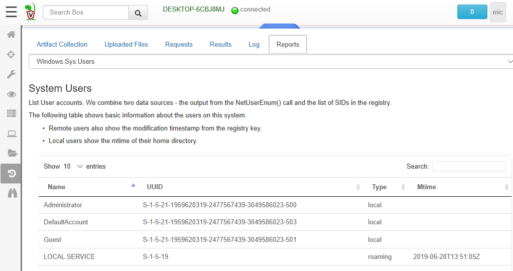
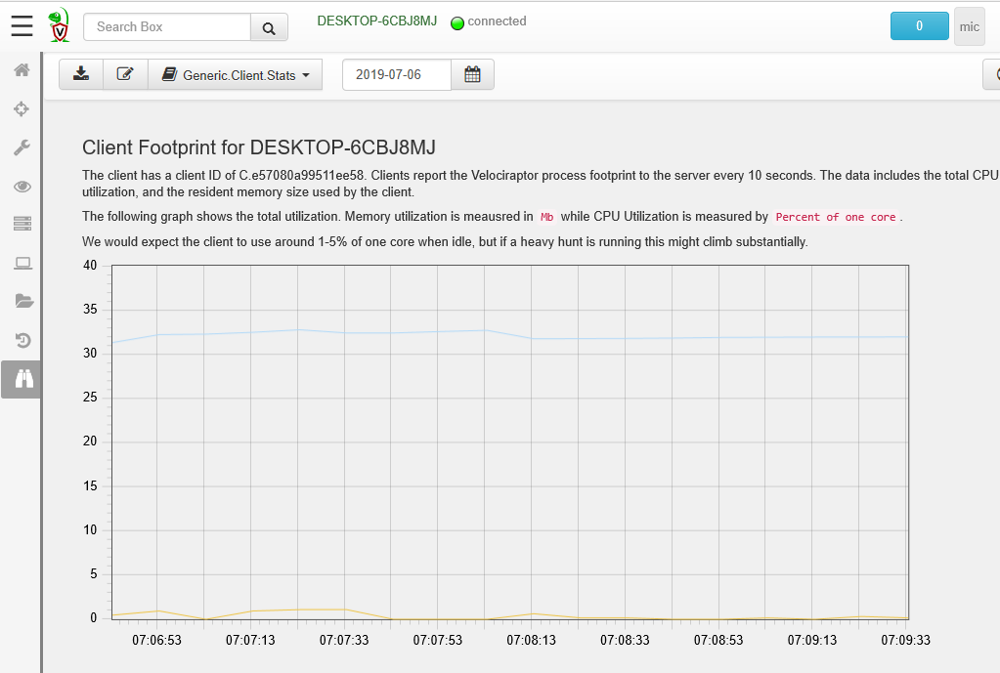

Velociraptor collects artifacts from end points but sometimes the
significance of the collected information requires user
interpretation. To assist in interpreting the collected information,
Velociraptor can generate a Report.
Artifact writers use the report to guide the artifact user in interpreting the results and assessing the significance of these results.
The artifact file therefore contains a report section which allows the artifact writer to explain the significance of the findings.
The report is simply a template that gets evaluated in the context of the collected artifact. The templating language is the same as Go’s text/template and produces markdown format.
It is possible to create multiple reports in each artifact to be used in different contexts. For example, an artifact that collects installed software might be run individually on one endpoint, or as part of a hunt. For the hunt we might want to count total machines with a certain software installed.
Therefore the following report types may be defined:
If the report type is left empty, the type is inferred from the artifact type.
Reports may call specialized functions to customize the data shown.
This is the most useful report plugin in Velociraptor reporting. It allows you to run arbitrary VQL statements and produces a result set with columns and rows.
There are two ways to run a query, inline and using a template. Due to limitations in the Go’s templating language, expansion braces may not contain line breaks. This makes it hard to properly format long VQL statements.
We can therefore define a template by name and simply call in as part
of the Query plugin. Here is an example from Windows.Sys.Users artifact:
{{ define "users" }}
LET users <= SELECT Name, UUID, Type,
timestamp(epoch=Mtime) as Mtime
FROM source()
{{ end }}
{{ Query "users" "SELECT Name, UUID, Type, Mtime FROM users" | Table }}
The source() VQL plugin is very useful in reports since it generates
all the results from the currently collected artifact. For artifacts
with multiple named sources, you can specify which source you want
using the source parameter (i.e. source(source="foo")
The Query plugin simply generates an array of rows so it is usually
necessary to pipe it to a Table, or LineChart or simply assign it
to a variable.
The Table plugin simply renders the result of the VQL statement as a table. An example of this output is shown below.

Sometimes we want to see the output as a line chart. Consider the
Generic.Client.Stats artifact which collects a client’s memory and
CPU load footprint every 10 seconds. In this case it is useful to see
the memory use as a chart:
{{ define "resources" }}
SELECT Timestamp, rate(x=CPU, y=Timestamp) * 100 As CPUPercent,
RSS / 1000000 AS MemoryUse
FROM source()
WHERE CPUPercent >= 0
{{ end }}
{{ Query "resources" | LineChart "xaxis_mode" "time" "RSS.yaxis" 2 }}
We first pipe the results of the VQL query to the LineChart plugin,
and specify some parameters to it.
xaxis_mode time means the x axis should be treated as a timestamp.RSS.yaxis Indicates that the second column should be an additional y axis.
Note that in the above query the source() automatically incorporated
the start and end times as set by the report viewer. The report author
does not need to do anything special.